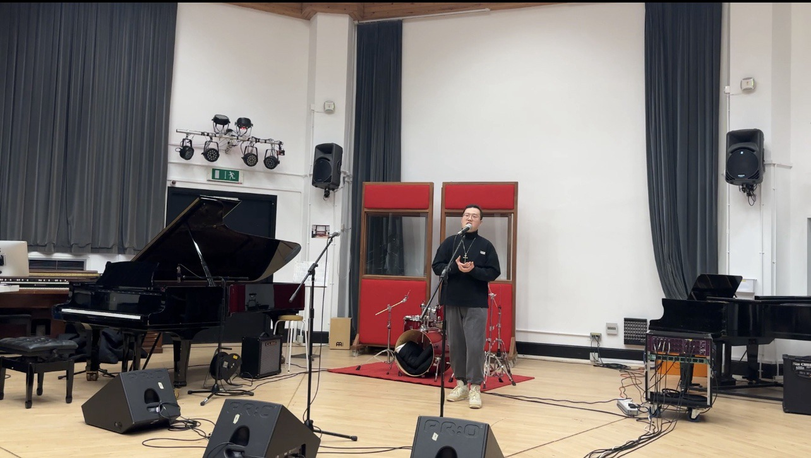

About Me
My musical education started when I was a baby. My parents were fascinated by classical music and have taken me to concerts for as long as I can remember. This has led to my interest in music since I was a child, and I always hum my favorite melodies in my mouth.

I started to receive systematic music education in high school. Since I lack interest in subjects such as mathematics and physics, I think music is my home. So when I was 16, I found my music teacher to learn classical music singing one-on-one. My teacher and I will discuss the music problems I encounter as equals. I remember once thinking that the last part of the cadenza should have a crescendo. Since the highest note is also the strongest emotion in the whole song, it should be the strongest. But the teacher did not deny me directly but told me the background story of this opera. The teacher believes that the hero's love for the heroine has been suppressed in his heart and cannot be expressed. So my teacher thinks that there should be a smooth treatment in the cadenza, even the highest note part can't be sung very well. Finally, we compared the two singing methods and found that the teacher's idea was right. My teacher needs to correct my pronunciation and show me how to handle these songs. How to accurately control the style of the song, she let me understand that good skills are very important for singing, but learning emotional expression is more important than skills. She made me understand that singing needs to be endowed with rich emotions to make the song come alive. She is my first music teacher and the teacher who has the greatest influence on my music. I am very grateful to her, she was very patient and kind to me, and let me learn a lot about music.
After I entered the university, I found that the teachers in the university were very different from the teachers in high school. The university teacher guides and controls the learning process of the students in the teaching relationship. They will pick out songs for the students that do not match their level of difficulty. Their purpose is to make students achieve better grades, but regardless of whether the song is suitable for learning. University music teachers are more inclined to guide students by hand, which suppresses the space for students to develop themselves. The experience of Chinese music education made me realize that the content of Chinese music teaching is mainly preaching. I think this teaching method made me not have my own ideas about music during college, but just follow the teacher's train of thought. In the process of learning, students have no more room for thinking, just like a machine. Students generally do not have their own references and opinions. Therefore, I think China needs to constantly explore and learn from other cultures to complement each other's strengths. So I chose to go abroad for postgraduate studies to receive a more advanced music education.
